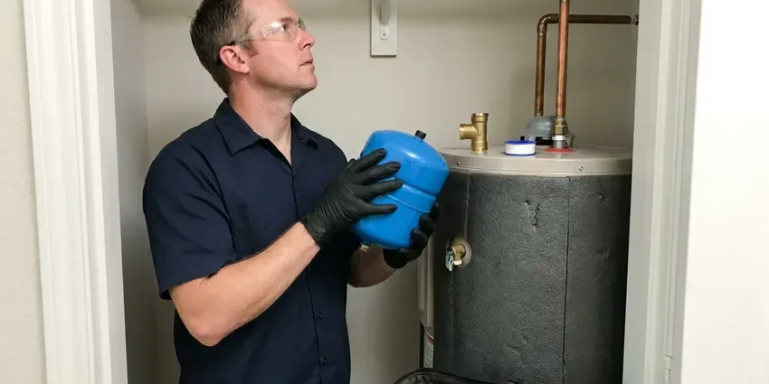

Water Line Installation in Smyrna, GA
Low pressure, a leaking old service line or a new build in Smyrna, GA? We trench, lay and connect water lines that pass inspection the first time.
- Fast, Dependable Service
- Trenching Through Rock and Clay
- Upfront Pricing
- Upfront Pricing

Expert Water Line Replacement & New Installs in Smyrna, GA.
We handle utility locates, permits and inspections so your new line goes in without hassle.
Professional Water Line Installation in Smyrna, GA
HGR Plumbing installs main water service lines for new construction, additions and homes whose original lines have failed. We call in utility locates, trench from the meter or well to the house, lay the pipe on proper bedding and connect to your shutoff and pressure regulator. Every line is pressure tested before the trench is closed.
Our expertise includes:
- Type K copper, PEX and HDPE service line installation
- Trenchless and traditional excavation methods
- Main Water Line Replacement & Installation

Additional Plumbing Installation Services in Smyrna, GA
We install water heaters, pumps, lines, and fixtures across Smyrna, GA with careful, permitted work that passes inspection the first time.


Customers
Why Choose HGR Plumbing for Water Line Installation in Smyrna, GA?
Choosing the right plumber for water line installation is key for your home's longevity and safety. Our team at HGR Plumbing is committed to delivering quality service on every project.
- Quality Materials, We use only high-grade materials like PEX and copper, known for their longevity and resistance to corrosion and leaks.
- Local Expertise, Our plumbers are familiar with local plumbing codes and the typical soil conditions in Smyrna, which can affect water line durability.
- Clean Restoration, We backfill, compact and regrade the trench so your yard looks like it did before.
Citywide Coverage
HGR Plumbing proudly serves every neighborhood in Smyrna, providing expert water line installation. From suburban developments to historic districts, we understand the plumbing needs and challenges of different areas.
Experienced Team
The team works with copper, PEX and HDPE regularly and knows the right fittings and joining methods for each. They also understand how pressure regulators, expansion tanks and softeners tie into a new main.
Safety-First Approach
We ensure every installation is not only functional but also safe and fully compliant with local safety regulations and plumbing codes, preventing hazards like backflow contamination or pipe bursts.
Trusted Certified Smyrna Plumbing Services Professionals
At HGR Plumbing, we take pride in providing certified plumbing services throughout Smyrna, GA. Backed by leading industry credentials, our experienced plumbers combine technical skill with genuine customer care. Whether it is repair, installation, or maintenance, we follow strict safety and quality standards to deliver lasting results you can trust.
Call Us Now PHCC Plumbing Contractor Recognition
PHCC Plumbing Contractor Recognition Better Business Bureau (BBB) Accreditation
Better Business Bureau (BBB) Accreditation Angi Certified Pro
Angi Certified Pro ISO 9001 Quality Management Certification
ISO 9001 Quality Management CertificationLong-Lasting Water Line Installation Services in Smyrna, GA
Water Line Installation Cost Comparison in Smyrna, GA
Cost depends mostly on run length, soil conditions and pipe material. A short PEX run through soft soil is the most affordable option, while long copper runs through rocky ground cost more in both labor and materials. Trenchless methods cost more per foot but can save thousands in concrete and landscape repair. We provide a written quote that itemizes trenching, pipe, fittings, permits and restoration.

Copper Water Line Installation in Smyrna, GA
Copper has been a trusted material for water lines for decades, known for its longevity, antimicrobial properties and resistance to high temperatures and pressure. HGR Plumbing provides professional copper water line installation in Smyrna, GA, for homeowners who prefer its long history. While often more expensive upfront, copper offers superior reliability and can add value to your property. Our skilled plumbers deliver precise solder joints and secure connections.
Water Line Upgrades & Relocation in Smyrna, GA
In some cases, home renovations or landscaping projects require existing water lines to be upgraded or relocated. HGR Plumbing provides professional services for modifying your current water line in Smyrna, GA. Whether you need to move a line for a new addition or upgrade to a larger diameter pipe for better water pressure, our plumbers do the work safely and to code, tying it in cleanly with your home's system.
Main Water Line Replacement in Smyrna
Over time, main water lines can corrode, crack or leak because of shifting soil, tree root intrusion or age. HGR Plumbing specializes in replacing old, failing main water lines, often upgrading from galvanized steel or polybutylene to more durable PEX or copper. We handle the excavation, pipe laying and connection to your home and the public water supply, with minimal disruption and lasting performance. Our team in Smyrna is familiar with local soil types and infrastructure.
Insulating Water Lines for Georgia Weather in Smyrna, GA
Before a cold night, unhooking garden hoses, covering hose bibs, and letting a faucet drip are usually enough to prevent a burst line. Even where winters are mild, a hard freeze can still pose a risk to exposed water lines. HGR Plumbing offers water line installation with proper insulation, especially for lines running through unheated spaces or near exterior walls in Smyrna, GA. This preventive step helps protect your pipes from freezing and bursting, safeguarding your home against costly water damage during cold snaps. We recommend insulation materials suited to local conditions.
PEX Water Line Installation in Smyrna
PEX, or cross-linked polyethylene, is a popular choice for its flexibility, durability and resistance to corrosion and freezing. Around Smyrna, sticky air means sweating cold-water pipes and toilet tanks are common, and that moisture can quietly rot subfloors if nobody notices. HGR Plumbing expertly installs PEX water lines for both new construction and replacements in Smyrna. PEX offers excellent flow rates and is less prone to bursting than traditional rigid pipe, providing a durable, cost-effective solution for your home's plumbing.
Compliance and Permits for Water Lines in Smyrna
Installing or replacing a main water line in Smyrna usually requires specific permits and adherence to local plumbing codes. HGR Plumbing handles all necessary permits and ensures every water line installation meets municipal and state regulations. Georgia builds its plumbing rules on the International Plumbing Code with state amendments, and local building departments handle permits and inspections. We are familiar with the local permitting process, so your project stays compliant and avoids fines or issues down the line. We take the stress out of dealing with local paperwork.

Trenchless Water Line Installation in Smyrna
When appropriate, HGR Plumbing offers trenchless water line installation, which can replace your main water line with very little digging. This technique, often using pipe bursting, can save your landscaping and reduce restoration costs. It is an efficient option for properties in Smyrna where traditional excavation would be overly disruptive or costly.
Water Line Installation Near Me in Smyrna, GA
When you need water line installation near me and want it done before the next billing cycle shows another leak, contact our local team. We schedule utility locates right away and can often start digging within a few days. Emergency situations get priority scheduling.
Our team is always prepared to respond quickly to your water line needs, so residents throughout Smyrna have access to skilled, dependable plumbing services right in their neighborhood. Don't hesitate to call (770) 470-3778 for assistance.
HGR Plumbing at a Glance
- Licensed and insured plumbers serving Smyrna, GA
- Same-day appointments and 24/7 emergency response
- Upfront, flat-rate pricing before work begins
- 4.9-star rated by 357+ Georgia customers
Smyrna Map
Smyrna Information
- Population
- 56,566
- Area codes
- 770/404/678
- Service area
- Smyrna and communities within 40 miles
- Nearby
- Marietta, Atlanta, Sandy Springs, Brookhaven
Rocky fill, shifting clay and settling soil wear down buried pipe over time, so a carefully bedded new water line protects pressure and prevents hidden yard leaks in Smyrna, GA.
Expert Services
Trust our professionals for reliable HGR Plumbing solutions in Smyrna, GA.
Our Specialized Plumbing Services in Smyrna, GA
At HGR Plumbing, we provide a complete range of plumbing services across Smyrna, GA. From leak detection to full system installations, our team ensures fast, precise, and affordable service for both residential and commercial properties. Explore our core services below:


How Our Water Line Installation Process Works in Smyrna, GA
Here is what you can expect when you choose us for your water line installation in Smyrna, GA.
Request a Quote
Call (770) 470-3778 to schedule an on-site evaluation of your current line, pressure and property layout. We give you a detailed estimate with material options and a clear timeline.
Locate and Dig
We request utility locates, mark the route and trench or bore to the required depth. The pipe is laid on clean sand bedding with tracer wire where needed.
Test and Restore
We pressure test the new line, connect it to the meter and home, and schedule inspection when required. Then we backfill, compact and regrade the work area.
Frequently Asked Questions About Water Line Installation in Smyrna
Most residential water line installations run $1,800 to $5,500 depending on length, soil and material. Long runs through rocky ground, trenchless boring or copper pipe can raise costs to $6,000 to $10,000 or more.
For most homes, PEX and copper are generally the best materials. PEX is flexible, corrosion-resistant and handles minor ground shifts well. Copper is very durable, long-lasting and resists bacterial growth. Homes farther south often draw from deep limestone aquifers, so harder water and the occasional sulfur smell are common complaints there. The choice often depends on budget, water chemistry and site conditions.
Depth requirements vary by jurisdiction and climate. Before a cold night, disconnecting hoses, covering hose bibs, and letting a faucet drip are usually enough to prevent a burst line. Lines must be buried below the local frost line, so colder areas call for deeper trenches than mild ones.
Trenching does disturb a narrow path, but we backfill, compact and regrade when we finish. If the route crosses concrete or mature landscaping, we can discuss trenchless options.
Homes are a mix of slab, crawlspace, and basement foundations, and crawlspace homes make most supply and drain repairs easier to reach. Soil that shifts and settles puts stress on underground pipes. This is why flexible materials like PEX are often recommended, and why proper bedding and backfill during installation are crucial to prevent pipe damage from ground movement.
Common signs you might need a new water line include a sudden drop in water pressure, discolored or rusty water from your faucets, constantly wet spots in your yard, unusually high water bills without a change in usage, or frequent leaks and repairs on your existing main line. These issues often point to corrosion or damage.
PEX is flexible, less expensive, resistant to freezing and corrosion, and has fewer fittings, which means fewer potential leak points. Copper is rigid, more expensive, has a proven track record, is naturally antimicrobial and can withstand higher temperatures. Both are excellent choices, and the best option depends on your budget, property needs and local water conditions in Smyrna.
We focus on high-quality, reputable brands for our water line installations. For PEX, we often use Uponor Wirsbo or Viega PureFlow. For copper, we use Type L or Type K copper from trusted manufacturers. Our material selection centers on durability and performance in your local conditions.
What People Are Saying About Our Plumbing Experts?

James P.
Our commercial plumbing system had a leak under the sink, and HGR Plumbing handled it professionally. The plumbers arrived quickly and restored everything without disruption to our customers.
Commercial Plumbing · Smyrna, GA
Daniel K.
A pipe burst at 11 pm and they actually answered. The plumber showed up within the hour, shut everything down, and had us back to normal the next morning. Could not ask for more.
Emergency Plumbing · Brookhaven, GA
Emily R.
I called HGR Plumbing for plumbing repair, and the technician was fast, polite, and thorough. They explained the problem clearly and fixed it the same day. I will definitely hire them again. Highly recommended!
Plumbing Repair · Dunwoody, GA
Mark T.
When our office needed drain cleaning, HGR Plumbing provided quick, reliable service. The plumber arrived on time and made sure every drain flowed perfectly before leaving. Very satisfied.
Drain Cleaning · Atlanta, GARobert G.
The trenchless sewer replacement saved our front yard. They walked us through the camera inspection footage first so we knew exactly what we were paying for.
Sewer Line Replacement · Brookhaven, GA
Patricia H.
We had a slab leak that two other companies could not find. HGR Plumbing located it in under an hour, explained our options, and the price matched the quote to the dollar.
Slab Leak Repair · Sandy Springs, GA